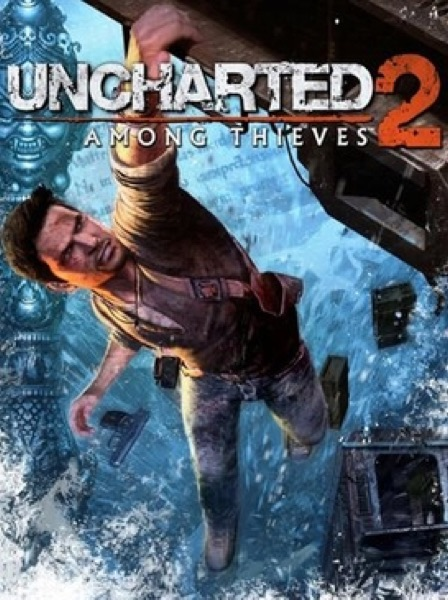

Adventure · 2009
Uncharted 2: Among Thieves
Set-piece cinema with likeable people and a train that never stops.

Cover: Wikipedia: Uncharted 2: Among Thieves
Facts
- Released
- 2009-10-13
- Genre
- Action-Adventure
- Category
- Adventure
- Platforms
- PlayStation
- Developers
- Naughty Dog
- Publishers
- Sony Computer Entertainment America, Sony Interactive Entertainment